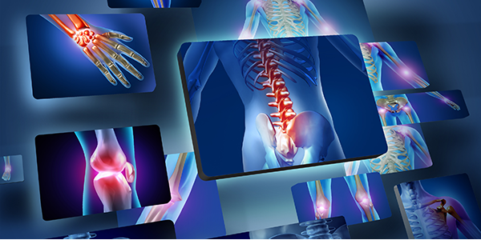

Arthritis, Its Symptoms, Causes, and Remedy
Arthritis
The term Arthritisis commonly used to address pains, especially when it involves swollen tissues close to the bones, and this is correct. Arthritis is simply an inflammation of a joint or joints. It is used to report over 100 conditions- with different causes and treatments, -that affects joints, its surrounding tissues, and connnective tissues. Of all the conditions ascribed to arthritis, the most common is the osteoarthritis. osteoarthritis is a chronic condition whereby cartilage
in the joints are being broken down, and this usually happens after middle age. This condition is usually commoon to develop amongs the age group 50 to 60 years, but can also affect any other age group. Other common arthritis conditions are rheumatoid arthritis (RA), psoriatic arthritis (PsA), and gout. Rheumatoid arthritis (RA) is a condition which is usually accompanied by pain, aching, stiffness, and swelling inside and around
the joints. It is common to develop amongs the age group 30 to 50 years, but can also affect any other age group. Gout is a painful inflammatory condition of the big toe and foot caused by defects in uric acid metabolism resulting in deposits of the acid and its salts in the blood and joints. Psoriatic arthritis is a condition slightly related to rheumatoid arthritis, but it usually affect the fingers and toes and associated is associted with psoriasis.
Symptoms of Arthritis
Symptoms of arthritis may develop gradually as one increase in age, and they may suddenly appear. There are general symptoms associated with arthritis and these symptoms may cross across every other type of arthritis, some of these symptoms for general arthritis includes- but are not limited to -the following: joint pain, stiffness, redness of surrounding tissues, aching, and swelling. Other symptoms for some specific types of arthritis include:
-
Other symptoms of Osteoarthritis
- limited range of motion
- Pop or click with bending
- muscle weakness around the joint
- bony growths in the fingers
- scraping feeling in the knees
-
Other symptoms of Rheumatoid
- fatigue
- more than one affected joint
- same joints on both sides of the body are affected
- morning stiffness
- inflammation of the eyes and mouth
Causes of Arthritis
- Age: As a persons' age increases, the ability to naturally heal decreases.
- Weight: Too much weight increases preasure on the joints, especially the knee and ancles joints.
- Gender: Women with ages 55 and older are more likely to develop osteoarthritis of the knee than men.
- Heredity: Bones strength, structure, shape, and sizes may be inherited from parents.
- Joint overuse: Certain occupations that includes a lot of heavy objects lifting activities may lead to development of osteoarthritis.
- Autoimmune disorder: This is a diseases characterized by abnormal functioning of the immune system that causes your immune system to produce antibodies against your own tissues.
Some Treatments of Arthritis
The main purpose of any treatment is to relief pain, control, and prevent further damages or problems for any ailment. There are several treatments that works with different types of arthritis but some common or general treatment include but not limited to the following;
- Regular exercise
- Physical therapy
- Medications
- Diets rich in nutrients
- Loseweighting
- Surgery
- Natural Supplements
Best Natural Remedy for Arthritis
Natural Supplement
There are several ways to restore hormones in the body, but it is best not to let those hormones get damaged in the first place. Natural Supplements are the best forms of hormone restoration therapy because it aids natural recovery and repairs of damaged bodily cells and tissues for any condition and it contains no chemicals. They are
gotten from naturally grown herbs and produced into friendly and easy to use forms (capsules). Yes! Natural supplements has been known not just to relief arthritis patients from their conditions, but it has also been reported to completly erradicate the problem completely in a short while. One of the known most effective treatment
which has been testified about to bring significant difference and recovery to many patients has been this product I am introducing to you now. Many who have used this product came back with lots of testimonies about how they have greatly been relieved; and a larger percentage of these people testified of complete healing.
The Best Natural Supplement

What Does it do?
- Strengthens joint muscles
- It improves locomotion of any stiff joints
- Erradicates any form of pain associated with bones and joints
- It dissolves whatever particles that is causing tissue/joint Inflammation and restores it to normal.
- It stops the progressive degeneration of bone marrow, strengthens the cartilage and clears bacteria affected parts.
- It fixes any existence of disjointed part and readjust them to fix up, strengthens the joints to become stronger and Prevent further Damages.
- It filters the unwanted bacteria present in the synovial fluids, cleanses it, strengthen the waist, and rebuilds damaged areas.
Why Choose This Therapy?
Aside the capabilities of these products combination, and the uniqueness of the testimonies gotten from our various clients from various pharmacuticals over the world, the above products combination have the prestigious
Kosher Seal (which makes them acceptable to the Jews). The Jews don’t take anything that isn’t 100% natural. As a fact, they don’t take bread with yeast! They believe in no additives. It also have other seals which include:
International Aloe Science Council seal, Halal (an Islamic medical) seals, and NAFDAC (Nigerian Food and Drug Council), these seals of highest form of purity.
Placing an order for Arthritis Solution Pack?
Kindly fill out the form below to place your order

If your country is not on the list above, kindly contact us to let us know how we can get the product to you.